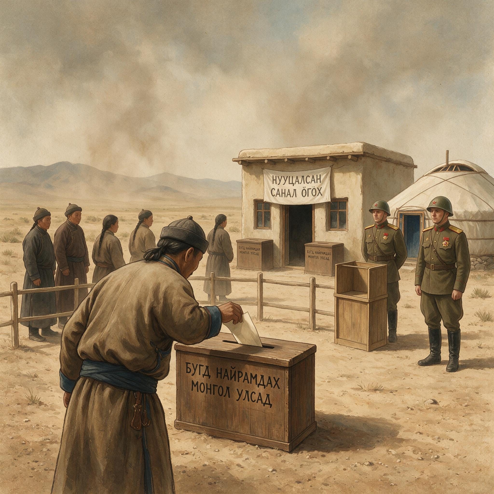

第 24 章
以1946年1月5日国民政府正式发布承认蒙古人民
“外蒙古人民一再表示独立之愿望，中国政府声明，在日本战败后，如外蒙古之公民投票证实此项愿望，中国政府当承认外蒙古之独立。”
这份换文中的措辞，在1946年1月5日的承认公告中被完整援引。公告的起草者没有添加任何修饰性的语句，没有回顾外蒙古与中国之间数百年的历史联系，没有解释国民政府做出这一决定的政治考量，没有对未来可能产生的外交后果做出任何预判。它只是陈述了一个条约义务的履行：条件已经满足，承认随之生效。
但换文中的这一措辞本身，就是一个需要被审视的对象。“一再表示”——这个表述预设了一个持续性的、自发的民意表达过程。然而，如果追溯外蒙古政权更迭的实际过程，所谓的“一再表示”究竟发生在什么时候，通过什么方式，由谁代表，这些问题在换文中都没有被界定。1921年蒙古人民革命党在苏俄红军支持下夺取政权，宣布独立；1924年哲布尊丹巴活佛圆寂后，蒙古人民革命政府废除君主制，成立蒙古人民共和国；1945年8月，蒙古人民共和国对日宣战，派出军队参与苏联的对日作战行动。
这些事件中的哪一件构成了“一再表示独立之愿望”？换文没有说明，承认公告也没有追问。
这种模糊性不是措辞上的疏忽，而是条约构造中的有意留白。1945年8月14日的中苏换文需要在两个相互矛盾的目标之间找到平衡：一方面，苏联需要中国在法理上承认外蒙古独立，以结束1921年以来外蒙古在国际法上的不确定地位；另一方面，国民政府需要将承认行为嵌入一个程序框架，使其看起来不是被迫的割让，而是对蒙古人民意愿的回应。模糊的措辞同时满足了双方的需求：对苏联而言，“一再表示”可以被解释为1921年以来蒙古人民革命政权的持续政治诉求；对国民政府而言，“如公民投票证实”可以被解释为保留了一个程序上的验证环节。
但这个验证环节在1945年10月20日被证明是形式化的。公民投票的结果——全体选民参与投票，全体投票赞成独立——在统计学上是可疑的，在程序上是不容检验的。中国派遣的观察员无法核实选民名册的真实性，无法监督投票过程，无法验证计票结果。
当1946年1月5日的公告将公民投票结果作为承认的依据时，它所依据的不是一个经过独立验证的事实，而是一个由苏联单方面提供和确认的数据。为什么国民政府会在明知公民投票程序存在严重缺陷的情况下，仍然选择依据这一投票结果发布承认公告？
答案在1945年2月的雅尔塔会议。罗斯福、丘吉尔和斯大林签署的秘密协定将外蒙古的现状列为苏联参加对日作战的条件之一。1945年6月，当美国将雅尔塔密约的内容正式通报给蒋介石时，国民政府面临的已经不是是否承认外蒙古独立的选择，而是如何在承认的进程中保留最大限度的法理尊严和政治回旋余地的困境。
雅尔塔密约的存在改变了整个谈判的框架。如果没有这一密约，1945年的中苏谈判将是一个双边谈判，中国可以拒绝苏联关于外蒙古独立的要求，或者至少可以将谈判拖延到更有利的时机。但雅尔塔密约将美国和英国也拉了进来：美国为了换取苏联对日作战，已经承诺支持苏联关于外蒙古现状的要求。
当国民政府得知这一承诺时，它在谈判桌上的筹码已经大幅缩水。它不能指望美国支持中国拒绝承认外蒙古独立，因为美国已经在雅尔塔同意了这一条件。它不能指望英国在外交上提供帮助，因为丘吉尔也是雅尔塔密约的签署方。
这就解释了为什么1945年8月14日的中苏换文会采取如此特殊的法理构造：国民政府接受了承认外蒙古独立的义务，但将这一义务的生效设定为附条件的——公民投票必须证实外蒙古人民确实有独立的愿望。这种构造在法理上为中国保留了一个拒绝承认的可能性：如果公民投票的结果是否定的，或者如果投票程序被证明存在舞弊，中国就可以主张条件未满足，从而拒绝履行承认义务。
但在政治上，这一可能性从一开始就不存在。苏联控制着外蒙古的整个政治机器，公民投票的结果在投票之前就已经确定。中国观察员的活动范围受到严格限制，无法获取足以证明程序瑕疵的证据。即使中国能够证明投票存在问题，在雅尔塔框架下，中国也没有任何大国支持其拒绝承认的立场。
制度性剥离的核心机制在此显现：每一个环节都在形式上保留了中国的选择权，但每一个环节的实质控制权都在苏联手中。换文设定了承认的条件，但条件的解释权在苏联。公民投票提供了程序上的验证，但投票的组织和监督在苏联。中国保留了拒绝承认的法理可能性，但行使这一可能性所需的政治和外交资源在中国之外。
将时间从1945年8月向前推三十二年，1913年的《中俄声明文件》展现了同样的机制。那一年，外蒙古军队在沙俄支持下向内蒙古境内推进，试图将政治控制范围扩展到整个蒙古地区。北京政府调集军队反击，在多伦诺尔、绥远一带与外蒙古军队交战。军事上的对峙为外交谈判提供了背景，但谈判的力量对比明显偏向俄国一方。1913年11月5日签署的《中俄声明文件》确立了此后三十余年外蒙古法律地位的基本框架：俄国承认中国对外蒙古的宗主权——这是中国在谈判桌上争取到的法理成果；中国承认外蒙古的自治权，承诺不在外蒙古驻军、殖民、设官——这是俄国迫使中国做出的实质让步。
“宗主权”这个词本身就是制度性剥离的产物。在清朝的行政体系中，外蒙古是清朝领土的一部分，由驻库伦办事大臣直接管辖。1911年辛亥革命后，外蒙古王公在沙俄支持下宣布“独立”，驱逐了清朝驻库伦办事大臣三多。北京政府不承认这一“独立”，坚持外蒙古是中国领土的一部分。
但在1913年的谈判中，俄国拒绝接受“主权”这一概念，坚持使用“宗主权”来界定中国与外蒙古的关系。这两个概念在国际法上有重要区别：主权意味着完全的领土权利，宗主权则意味着一种模糊的、有限的上位权力，通常与被保护国的自治权并存。
北京政府接受了“宗主权”这一措辞，这是它在力量对比失衡条件下的被迫选择。如果不接受，俄国将继续支持外蒙古的“独立”政权，中国在军事上无力收复，在外交上无法孤立俄国。接受“宗主权”，至少可以在法理上保留中国与外蒙古之间的某种联系，为将来的局势变化留下可能性。
但这种保留的代价是实质性的：中国承诺不在外蒙古驻军、殖民、设官，这意味着中国放弃了在外蒙古行使主权的最基本手段——军事存在、行政管理和人口迁移。这是制度性剥离的第一个关键步骤：将中国对外蒙古的权利从“主权”降格为“宗主权”，将外蒙古的地位从“领土”转化为“自治区域”，将中国的义务从“管辖”限定为“不干涉”。
1915年的《中俄蒙协约》将这一框架三方化：外蒙古取消“独立”称号，改称“自治”，承认中国的宗主权；中国承诺不干涉外蒙古内政；俄国获得与外蒙古保持特殊关系的权利。三方框架在形式上比1912年的《俄蒙协约》更有利于中国——1912年的《俄蒙协约》是俄国与外蒙古之间的双边协议，中国完全被排除在外——但实质上，它只是将中国从被排除者变成了被约束者。
为什么1915年的三方框架会被接受？北京政府在谈判中的逻辑是清晰的：与其让俄国和外蒙古在排除中国的情况下自行安排彼此关系，不如将中国纳入框架，至少保留法理上的宗主地位。
但这一逻辑忽略了一个关键问题：法理上的宗主地位如果不能转化为实际的控制能力，就会成为一个空壳。中国承诺不驻军、不殖民、不设官，这意味着中国没有任何手段影响外蒙古内部的政治进程。俄国保留与外蒙古的特殊关系，这意味着俄国可以继续在外蒙古培植影响力。外蒙古获得自治权，这意味着外蒙古的政治精英可以在中俄之间选择更有利于自身的一方。
1917年俄国革命打破了这一框架。沙俄政权崩溃，苏俄政府忙于内战，无暇东顾。外蒙古的自治政权失去了俄国的军事和财政支持，面临严重的经济困难。1919年，外蒙古王公向北洋政府求援，表示情愿撤销自治，恢复清朝旧制。
这是1911年以来外蒙古内部政治力量第一次主动向中国靠拢，其直接原因是俄国支持的消失，而不是对中国宗主权的认同。北洋政府派遣徐树铮率军进入外蒙古，于1919年11月宣布取消外蒙古自治，恢复中国主权。徐树铮的军事行动在短期内取得了显著成效：中国军队进入库伦，外蒙古自治政府被解散，中国的行政机构重新设立。
这是1911年以来中国政府唯一一次以军事手段实质性恢复对外蒙古的控制。
但徐树铮的收复只维持了不到一年。1920年直皖战争爆发，北洋政府内部陷入军阀混战。徐树铮是皖系将领，在直皖战争中皖系战败，徐树铮被迫离开外蒙古。驻外蒙古的中国军队失去了后勤支持和政治后盾，力量迅速削弱。1921年，苏俄红军以追剿白俄残部为名进入外蒙古，支持蒙古人民革命党建立新政权。同年7月，蒙古人民革命政府在库伦成立，宣布外蒙古为独立国家。
徐树铮收复外蒙古的失败揭示了制度性剥离的第二个关键特征：中国恢复控制的能力不是取决于法理权利的清晰程度，而是取决于国内政治的稳定程度。1919年徐树铮能够进入外蒙古，是因为俄国暂时无力干预，而北洋政府有足够的军事资源支持这一行动。1920年徐树铮被迫离开外蒙古，是因为北洋政府内部的军阀矛盾爆发，军事资源被转移到内战战场。外蒙古的得失，在很大程度上不是由中蒙之间的力量对比决定的，而是由中国内部的政治稳定程度决定的。
当一个国家的中央政府无法维持内部的稳定时，它对边疆地区的控制能力就会急剧下降，无论它在法理上拥有多么充分的权利。1924年的《中苏解决悬案大纲协定》在法理上为中国收复了部分失地。协定规定：苏联承认外蒙古为中国领土之一部分，尊重中国在该领土内的主权；苏联承诺从外蒙古撤军。这是中国在条约文本上取得的最大成就——1915年《中俄蒙协约》中使用的“宗主权”一词被替换为“主权”，苏联明确承认了中国的领土权利。
但法理成就与政治现实之间存在巨大的落差。1924年的中国正处于军阀割据和国民革命的前夜。北洋政府的权威已经严重削弱，各地军阀各自为政，广州的国民政府正在准备北伐。没有任何一个中国政治力量能够将外交谈判中获得的法理权利转化为对外蒙古的实际控制。
苏联承诺从外蒙古撤军，但撤军的时间表和监督机制都没有在协定中明确规定。实际上，苏联军队从未完全撤出外蒙古，蒙古人民革命政权在苏联的支持下继续巩固其统治。
1924年11月，哲布尊丹巴活佛圆寂后，蒙古人民革命政府宣布废除君主制，成立蒙古人民共和国。中国的主权声索在法理上仍然有效，但在事实上已经完全无法行使。
这是制度性剥离的第三个关键特征：法理权利的确认与事实控制的恢复之间存在时间差，而这一时间差往往被对方利用来完成既成事实的固化。1924年协定确认了中国的主权，但外蒙古的政治现实已经朝着独立国家的方向不可逆转地演进了。蒙古人民共和国制定了宪法，建立了政府机构，组织了军队，发行了货币，与苏联建立了外交关系。当中国在法理上确认主权的时候，外蒙古在事实上已经具备了独立国家的所有要素。
1945年的雅尔塔会议将这一事实上的独立推向了法理上的最终确认。2月11日签署的秘密协定规定“外蒙古之现状应予保持”。这一条款的措辞同样是模糊的——“现状”究竟是指外蒙古作为中国领土一部分的法理现状，还是指外蒙古由苏联实际控制的政治现状？
从斯大林的角度看，答案很清楚：苏联希望将1921年以来形成的政治现实转化为国际法上的承认。从罗斯福和丘吉尔的角度看，他们可能并不完全理解这一条款的全部含义，或者他们理解但在对日作战的更大战略目标面前选择了接受。
雅尔塔密约是大国交易最赤裸的形式。外蒙古的命运不是在库伦决定的，不是在南京决定的，而是在克里米亚的一个度假胜地，由三个从未踏足蒙古高原的政治领袖，在讨论对日作战的战略安排时，作为附带条件写进了秘密条款。中国代表不在场，蒙古代表不在场。这一条款的存在本身也要等到几个月后才为中国政府所知。
1945年6月，美国将雅尔塔密约的内容正式通报给国民政府。蒋介石在日记中记录了他得知这一消息时的反应：愤怒、无奈、以及一种被迫接受的政治判断。如果拒绝雅尔塔条款，就可能失去苏联在对日作战中的合作，进而影响东北的收复。
如果接受雅尔塔条款，就必须在外蒙古问题上做出让步。这是一个两难选择，但两难的结构本身是由雅尔塔密约预先设定的。
国民政府没有被给予参与制定条款的机会，只被给予了接受或拒绝的选择。而拒绝的代价——失去美国的支持、失去东北收复的机会——高到无法承受。
1945年8月14日的中苏换文是在这一背景下签署的。换文将承认外蒙古独立设定为附条件的义务：条件满足，义务自动生效。1945年10月20日的公民投票被设计为满足这一条件的程序装置。1946年1月5日的承认公告是这一程序装置的最终输出。当公告在重庆发布时，它所触发的反应出奇地平静。
这不是因为中国人不在乎外蒙古的失去，而是因为在1946年1月5日这一天，承认外蒙古独立已经不再是一个需要辩论的问题。辩论发生在1913年，当北京政府被迫接受“宗主权”措辞时。辩论发生在1915年，当三方协约将中国的义务固化为“不驻军、不殖民、不设官”时。辩论发生在1924年，当苏联承认中国主权却同时默认蒙古人民共和国的存在时。辩论发生在1945年，当雅尔塔密约将外蒙古的命运作为大国交易的筹码时。

1913年秋天，外蒙古军队越过戈壁，向内蒙古境内推进。这支军队由沙俄军官训练，装备俄制步枪和机枪，在达尔罕旗、四子王旗一带与北洋政府军交火。北京政府调集驻绥远、察哈尔的部队向北迎击，在多伦诺尔以南阻止了外蒙古军队的继续深入。军事上的对峙持续了数周，双方各有伤亡，但战线的位置没有发生根本性变化。
外蒙古军队无法突破北洋军的防线继续南下，北洋军也无力向北追击进入外蒙古境内。这场短暂的边境战争在军事上陷入了僵局，但它在政治上产生了一个决定性的后果：它证明了中国在军事上无力单方面收复外蒙古，也证明了俄国在背后支持外蒙古政权的决心不会因为局部冲突而动摇。
正是在这一军事僵局的背景下，1913年11月5日，《中俄声明文件》在北京签署。谈判的过程至今仍然可以在外交部档案中找到痕迹：俄国公使库朋斯基在会谈中反复使用一个比喻——“中国对外蒙古的权利，如同兄长对已分家的弟弟，有尊长的名分，无管家的实权。”这个比喻精确地概括了俄国试图强加给中国的法理框架：保留中国的面子，拿走中国的里子。
北京政府的外交总长孙宝琦在谈判中试图争取更有利的条款，要求俄国明确承认中国对外蒙古的“主权”而非“宗主权”。库朋斯基拒绝了这一要求，理由很简单：如果中国拥有主权，就意味着中国有权在外蒙古驻军、设官、殖民，而这正是俄国不能接受的。俄国可以接受中国保留一个名义上的上位权，但不能接受中国行使任何实质性的管辖权。
“宗主权”这个词在中文外交文献中是陌生的。清朝的朝贡体系中，朝鲜、越南、琉球被视为藩属国，中国对它们的关系有时被西方国际法学者类比为“宗主权”。
但外蒙古在清朝行政体系中从来不是藩属国，而是直接管辖的领土。将“宗主权”应用于外蒙古，本身就是一种法理上的降格：它暗示外蒙古与中国的关系不是领土归属，而是保护与被保护。北京政府的外交官们清楚地意识到了这一措辞的危险。在谈判记录中，中方代表多次试图用“主权”替代“宗主权”，但每一次都被俄方驳回。
最终，北京政府接受了“宗主权”的措辞，不是因为外交官们不理解其含义，而是因为军事现实不允许他们有更好的选择。外蒙古军队在多伦诺尔前线的存在本身就是一种无声的论据：如果谈判破裂，俄国将继续支持外蒙古政权，而中国在军事上无法改变这一局面。
《中俄声明文件》的第二条是整套制度性剥离机制的原始模板。中国承认外蒙古的自治权，承诺不在外蒙古驻军、殖民、设官。这三项承诺中的每一项都针对着主权行使的具体手段。驻军是维持领土控制的最基本方式，没有军事存在，主权就是一句空话。殖民是改变人口结构、巩固统治基础的手段，清朝在新疆、东北的统治都依赖于移民实边。
设官是建立行政管辖的制度性保障，没有中国的官员在外蒙古执行法律、征收税收、维持秩序，中国的主权就无法从法条转化为治理。北京政府在1913年11月做出的这三项承诺，等于放弃了在外蒙古行使主权的全部手段。它保留了一个“宗主”的头衔，但交出了“宗主”赖以行使权力的所有工具。
为什么北京政府会接受这样的条款？答案不在谈判桌上，而在谈判桌之外。1913年的中国，辛亥革命刚刚过去两年，袁世凯政府面临着南方革命党的挑战、地方军阀的离心、财政的枯竭和列强的压力。
外蒙古问题在这个危机清单上排不到最前面。袁世凯需要俄国在外交上保持中立，至少不积极支持南方革命党。他需要集中有限的军事资源应对国内的反抗，而不是在蒙古高原上与俄国的代理人打一场没有胜算的战争。接受《中俄声明文件》是在多重压力下的被迫选择，是权衡利弊后的次优方案。
但次优方案的问题在于，它一旦被接受，就会成为下一步谈判的起点。1915年的《中俄蒙协约》就是在1913年声明文件的基础上扩展而成的三方框架。
1915年6月7日，中国、俄国、外蒙古三方代表在恰克图签署了《中俄蒙协约》。这份协约的文本结构本身就是制度性剥离的直观体现。协约共二十二条，其中规定外蒙古取消“独立”称号，改称“自治”，承认中国的宗主权；
中国承诺不干涉外蒙古内政，不在外蒙古驻军、殖民、设官；俄国承诺不兼并外蒙古领土，但保留与外蒙古保持特殊关系的权利。三方框架在形式上比1912年的《俄蒙协约》更有利于中国——1912年11月3日签署的《俄蒙协约》是俄国与外蒙古之间的双边协议，中国完全被排除在外，俄国承认外蒙古的“自治”地位，外蒙古承诺不与任何第三方签订损害俄国利益的条约。那份协约的实质是将中国从外蒙古事务中完全排除出去。1915年的三方协约至少将中国拉回了谈判桌，让中国的宗主权得到了俄蒙两方的确认。
但这种“拉回”的代价是中国的义务被明确化和固化了。1913年声明文件中中国承诺不驻军、殖民、设官，这还只是中俄之间的双边谅解。1915年协约将这三项承诺变成了三方条约义务，外蒙古作为缔约方之一，获得了要求中国履行不干涉承诺的条约权利。这是制度性剥离的第二个关键步骤：将中国的自我限制从政治承诺升级为条约义务，从双边谅解升级为三方约束。从此以后，中国如果试图在外蒙古恢复驻军或设立行政机构，不仅会面临俄国的反对，还会面临外蒙古以条约缔约方身份提出的法理抗议。中国被自己签署的条约锁住了手脚。
恰克图谈判期间，中方代表陈箓在给外交部的密电中描述了他的困境：“俄蒙两方已先期协调立场，中方每提一条款，俄蒙两方均以事先约定之口径回应。中国名为三方之一，实为以一对二。”这种谈判结构决定了中国在每一个具体条款上都处于劣势。外蒙古代表在谈判中表现得异常强硬，拒绝接受任何可能削弱自治权的条款。
俄国代表则在关键时刻出面“调停”，提出的妥协方案总是在实质上偏向蒙古一方。陈箓在密电中写道：“俄使名为调人，实为蒙方后盾。每当中蒙意见相持不下，俄使必以‘避免谈判破裂’为由，劝中方让步。”这种谈判模式在此后三十年间反复出现：中国在法理上拥有权利，但在谈判桌上缺乏将权利转化为条款的力量。
到了1946年1月5日，所有的辩论都已经结束，所有的选择都已经做出，所有的代价都已经支付。公告只是为这条从1913年开始锻造的锁链扣上了最后一个环。但这个环的扣合并不意味着锁链的终结。国民政府在承认公告中使用的是“蒙古人民共和国”这一名称，这在法理上意味着承认外蒙古是一个独立的主权国家。
然而，法理承认与实际外交关系之间仍然存在距离。蒙古人民共和国在此后数年间试图加入联合国的努力一再受挫，国民政府在安理会行使否决权，以边界尚未划定、外交关系尚未建立为由，拒绝支持其入会申请。承认公告闭合了条约链，但并未终结外交角力。
它只是将外蒙古问题从“是否独立”转变为“独立后的关系如何界定”，将争议的场域从双边谈判转移到多边国际组织。1946年1月5日傍晚，重庆的冬雾如常降临。外交部条约司的档案库中，公告原件被归档，编号与1913年《中俄声明文件》、1915年《中俄蒙协约》、1924年《中苏解决悬案大纲协定》、1945年中苏换文并列。
这些文件构成了一条完整的链条，每一份文件都是前一环的延续，每一环都在锁紧同一个结局。链条的起点是1913年北京政府在俄国压力下接受“宗主权”措辞的那一刻，终点是1946年1月5日国民政府在雅尔塔框架下履行承认义务的这一刻。三十三年间，中国的决策者在每一个关键节点上都做出了在当时条件下最合理的判断，但这些判断的累积效应却导向了一个无人愿意接受的终点。这不是任何单一决策的失败，而是一种制度性机制的必然结果：当法理权利的保留与事实控制的恢复之间存在不可逾越的鸿沟时，每一次“暂时”的让步都会成为下一次让步的起点，直到最后的退场成为唯一的选项。